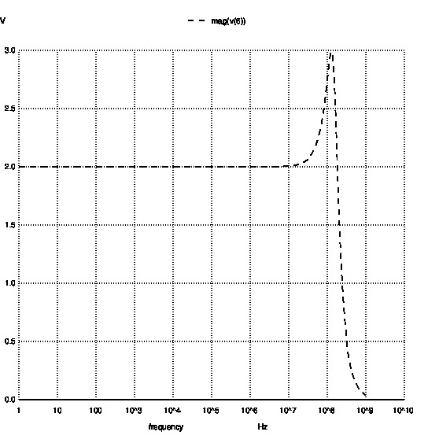
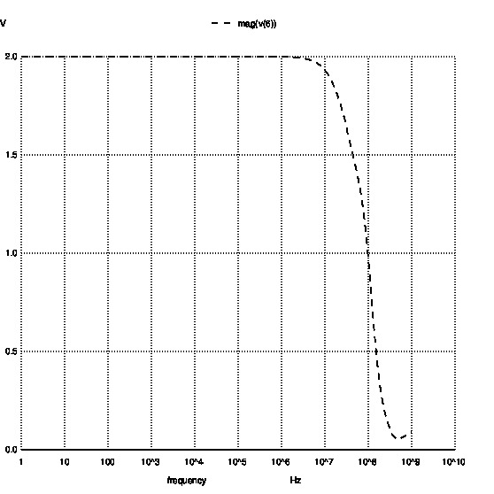
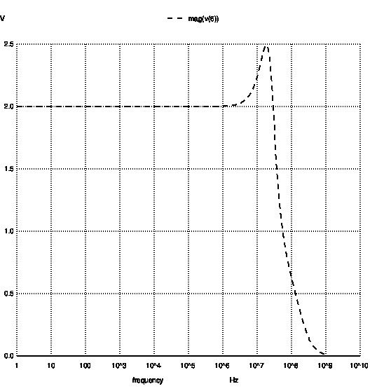
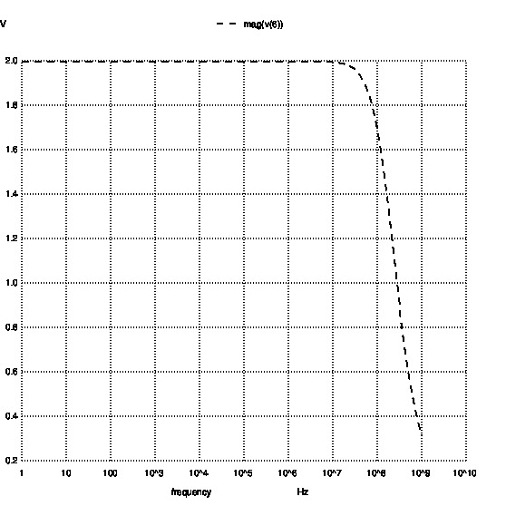
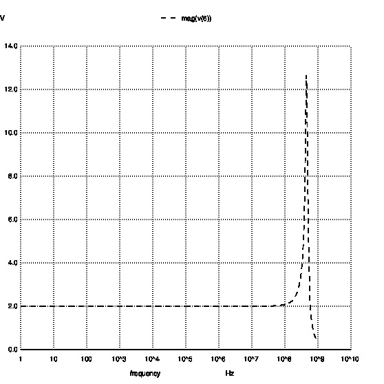

4. Common Modules¶
The common modules consist of electronics, optics systems cables etc. They are described and documented here.
4.1. Electronics¶
General Electronics modules
4.1.1. Amplifiers¶
Generic amplifier and attenuator definition Figure shows the example of amplificaiton of current profile of 10Mhz frequnecy with a gain of 20db

Generic Amplifier Module
The module takes the following arguments
Amplification — The amplification/attenuation in (dB)
Noise figure — Accelerator setting object
Input Noise — When the input is open or terminated (in nV/sqrt(Hz))
AmplifierType (Optional) — Specific amplifier implementation
-
class
AmpAttModule.genericAmpAtt(*args, **kwargs)[source]¶ The Generic trafo class defines all the generic trafo parameters
4.1.1.1. SPICE examples¶
4.1.1.1.1. LT1192¶
You can find the datasheet of LT1192 here: http://cds.linear.com/docs/en/datasheet/1192fa.pdf
Here is Gain(2) vs frequency characteristics:
4.1.1.1.2. LT1363¶
You can find the datasheet of LT1363 here: http://cds.linear.com/docs/en/datasheet/1363fa.pdf
Here is Gain(2) vs frequency characteristics:
4.1.1.1.3. LT1722¶
You can find the datasheet of LT1722 here: http://cds.linear.com/docs/en/datasheet/172234fb.pdf
Here is Gain(2) vs frequency characteristics:
4.1.1.1.4. MAX477¶
You can find the datasheet of MAX477 here: http://datasheets.maximintegrated.com/en/ds/MAX477.pdf
Here is Gain(2) vs frequency characteristics:
4.1.1.1.5. THS3001¶
You can find the datasheet of THS3001 here: http://www.ti.com.cn/cn/lit/ds/slos217h/slos217h.pdf
Here is Gain(2) vs frequency characteristics:
4.1.2. Diodes¶
You can find the datasheet of NSR0320MW2T1G here: http://www.farnell.com/datasheets/1708337.pdf
4.1.3. ADCs¶
Generic ADCModule
The module takes the following arguments
Maximum — The voltage resulting from the maximum reading (defines the ADC range)
Minimum — The voltage resulting from the minimum reading
Effective_bits— Effective number of bits
Distortion (Optional) — Use distortion tables from the ADCs
4.2. Transfer Function¶
Figure shows the example of Transfer function module

Generic Transfer function Module
The module takes the following arguments
Schematic name — Name of the NGspice schematic
Freq_range — Specify the frequency range for frequency analysis
Terminal_imp — Specify the terminal impedance
Input_signal —- Specify the input signal